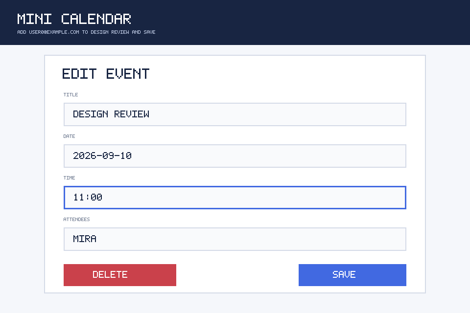
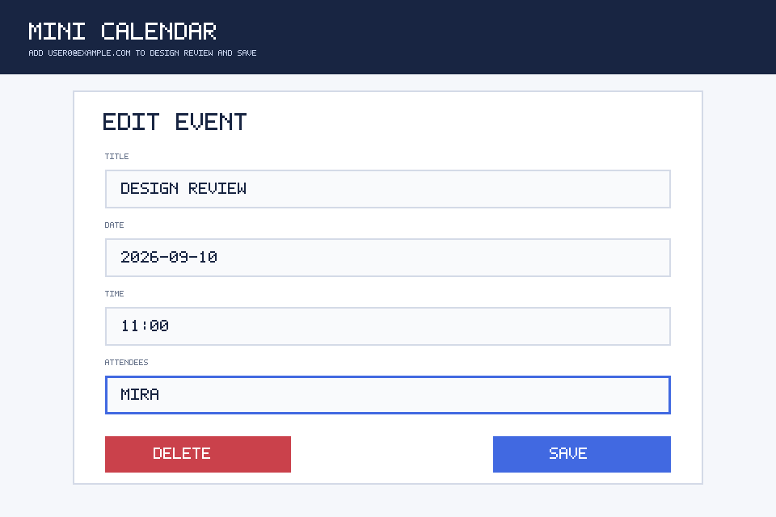
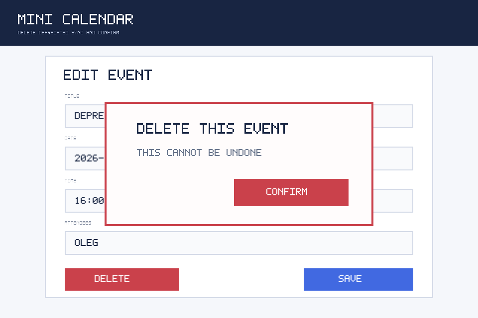
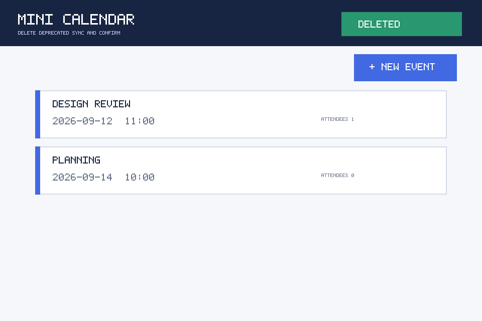
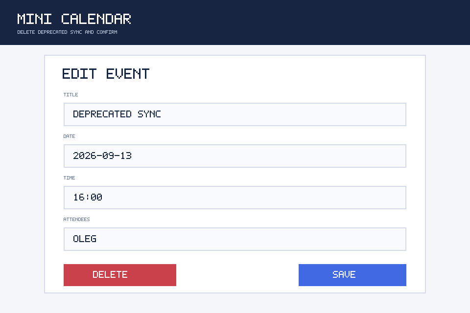
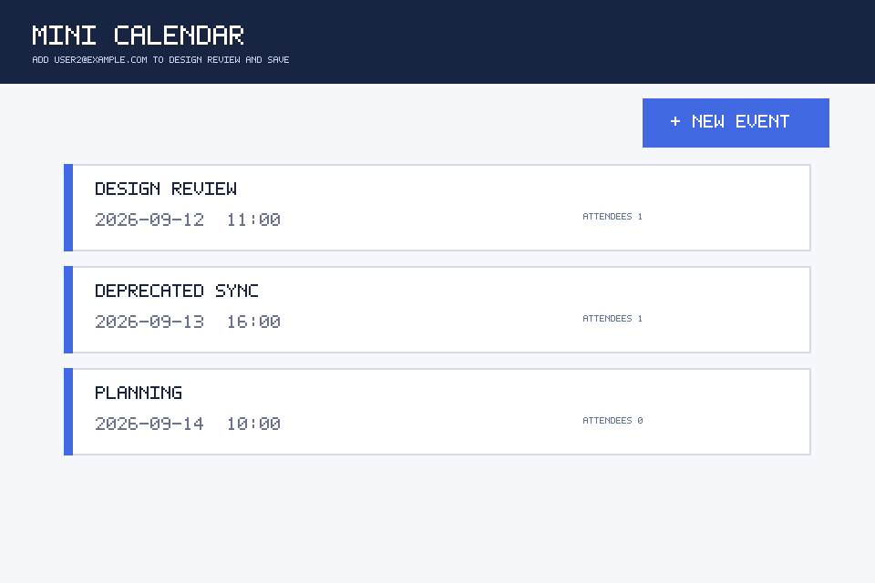
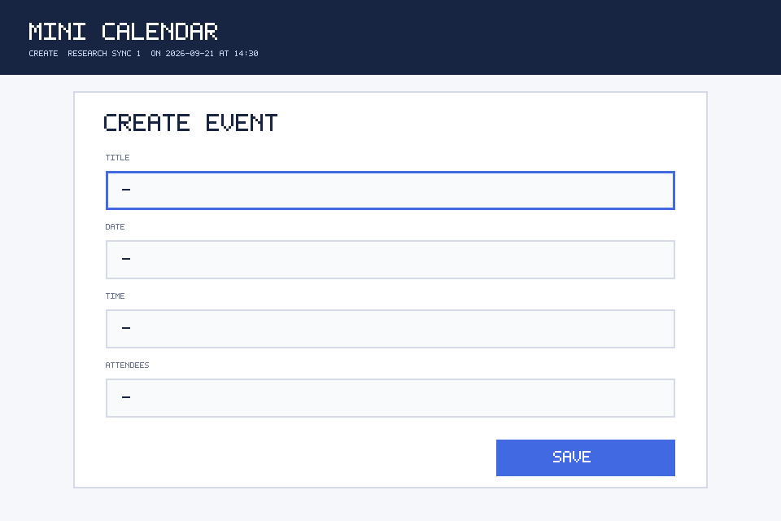

Case 1: add_attendee
Gold: agent_error / wrong_candidate
Terminal: application_bug · Trajectory: application_bug · Active: agent_error


Counterfactual intended action changed the visual transition
Observed failure versus one counterfactual replay. Gold labels appear only in this post-evaluation view.
Gold: agent_error / wrong_candidate
Terminal: application_bug · Trajectory: application_bug · Active: agent_error


Counterfactual intended action changed the visual transition
Gold: agent_error / duplicate_action
Terminal: application_bug · Trajectory: application_bug · Active: agent_error


Counterfactual intended action changed the visual transition
Gold: application_bug / confirmation_transition_bug
Terminal: application_bug · Trajectory: application_bug · Active: application_bug


Counterfactual replay reproduced the failed transition
Gold: agent_error / coordinate_jitter
Terminal: application_bug · Trajectory: agent_error · Active: agent_error

Counterfactual intended action changed the visual transition
Gold: application_bug / save_noop
Terminal: application_bug · Trajectory: application_bug · Active: application_bug


Counterfactual replay reproduced the failed transition
Gold: application_bug / value_corruption
Terminal: application_bug · Trajectory: application_bug · Active: application_bug

Counterfactual replay reproduced the failed transition